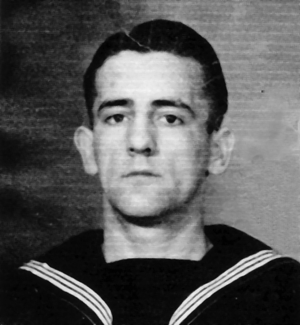

In Memory of
Ordinary Seaman ANTHONY ELI AUGUSTUS TIMMONS
P/JX 790864, H.M.S. Theseus, Royal Navy
who died age 19
on 20 July 1947
Son of John and Mary Timmons, of Aldershot, Hampshire.
Remembered with honour
PORTSMOUTH NAVAL MEMORIAL
IN HONOUR OF THE NAVY AND TO THE ABIDING MEMORY OF THOSE RANKS AND RATINGS OF THIS PORT WHO LAID DOWN THEIR LIVES IN THE DEFENCE OF THE EMPIRE AND HAVE NO OTHER GRAVE THAN THE SEA
Tony Timmons was an Aircraft Handler, he was tragically killed when a Seafire of 804 Squadron crash-landed on deck. The aircraft's arrester hook struck Tony on the head and decapitated him. He was buried at sea. CLICK HERE FOR FUNERAL PHOTOS